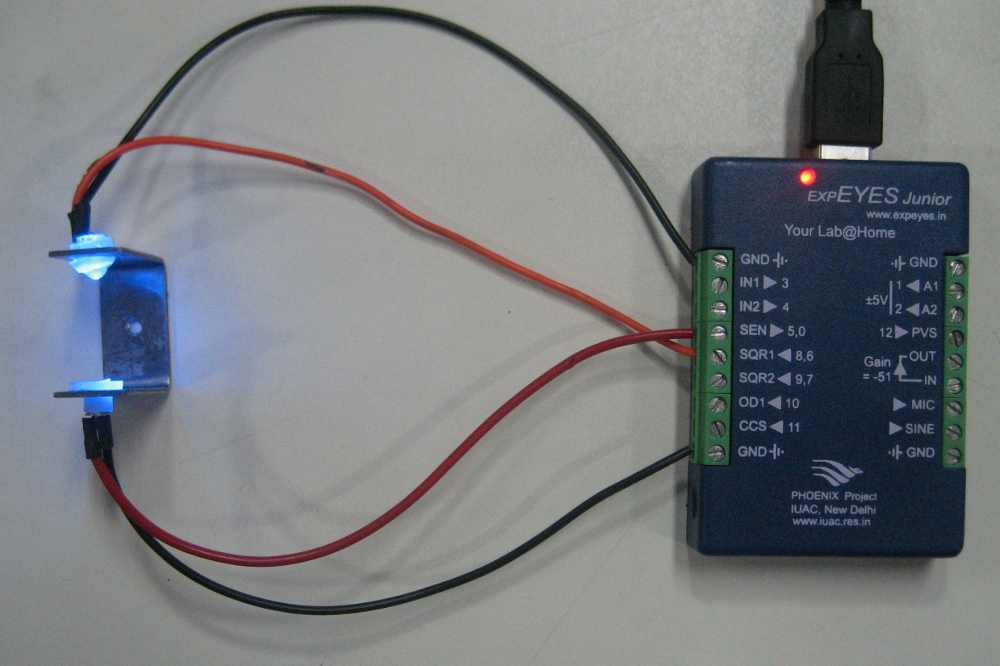

Demonstrate the conversion of electrical signals into light, transmission of the light signals, and converting them back to electrical signals. A square wave (black trace) is applied to the LED and the light is send to the photo-transistor. The output of the photo-transistor (red trace) is also shown. The frequency information of the original waveform is preserved but the photo-transistor OFF time is slower than ON time.
 Â